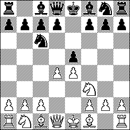

Шотландская партия

"Шотландка" - менее популярный, чем "испанка" или "итальянка" дебют, однако и он имеет своих поклонников! Вообще долгое время он был забыт и
Назад На главную
не применялся в турнирной практике топ-шахматистов, но интерес к нему возродил сам Гарри Кимович Каспаров, имеющий невероятную статистку в
дебюте. В наши дни законодателем моды в дебюте является Ян Непомнящий, также дебют находится в репертуаре большинства топ гроссмейтеров. Я
тоже долгое время играл его:)